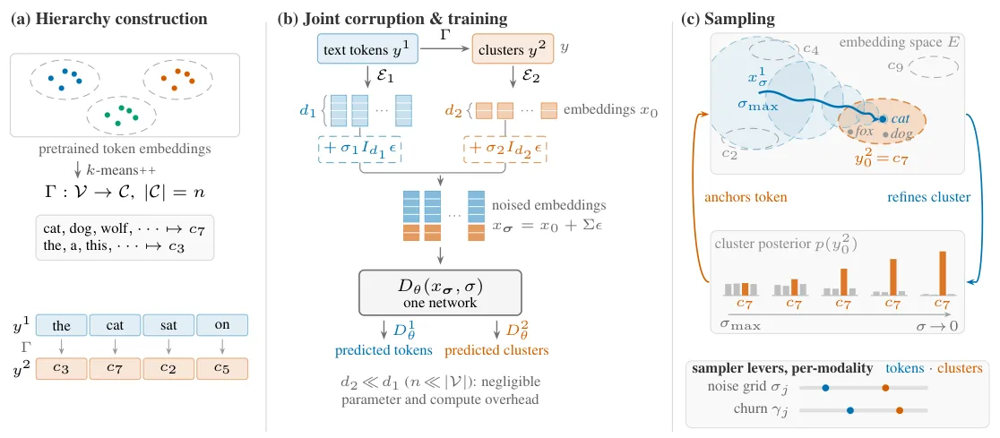
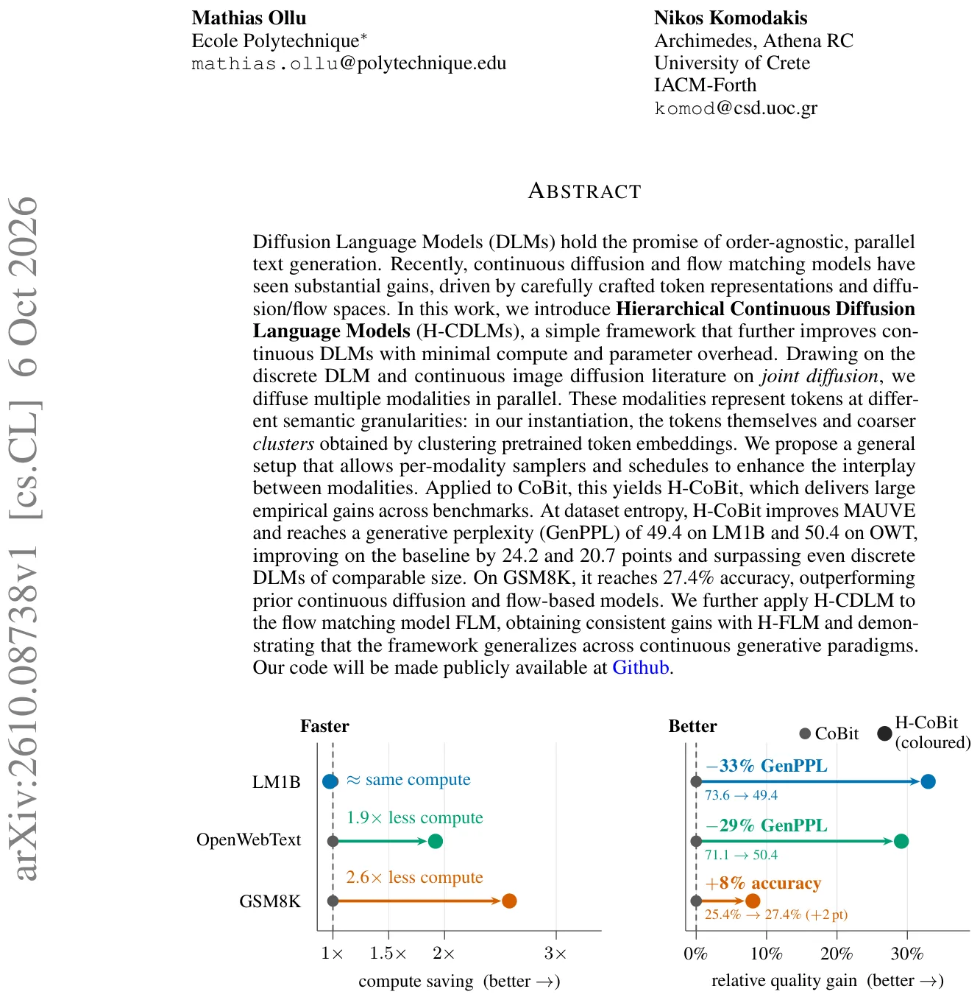
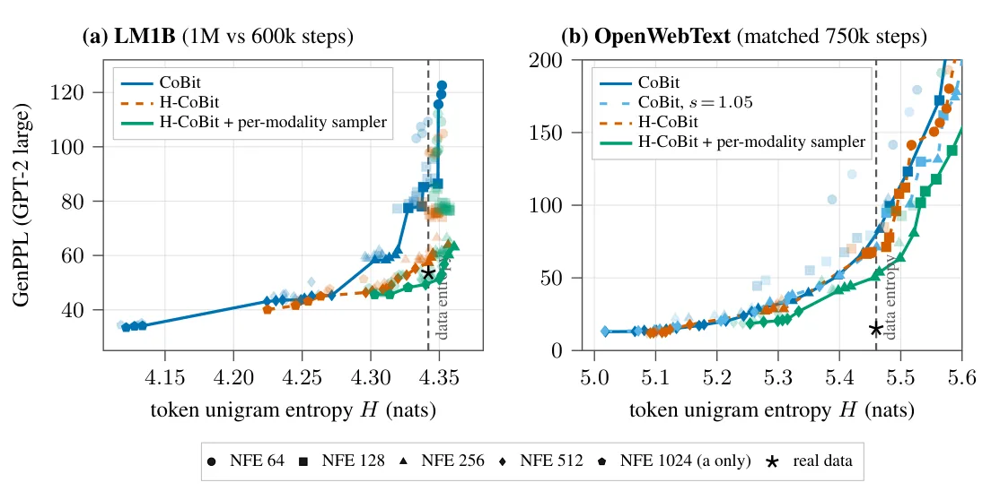
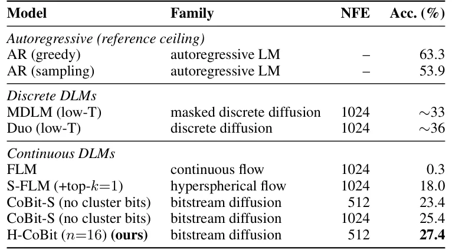

O problema da difusão contínua em texto
Modelos autoregressivos dominam a geração de linguagem natural porque são simples: preveem o próximo token, da esquerda para a direita. Mas essa sequencialidade impede paralelização e pode prejudicar tarefas que não seguem ordem estrita. Modelos de difusão para linguagem (DLMs) prometem geração paralela, removendo ruído de sequências inteiras ao mesmo tempo. O desafio é que difusão foi pensada para dados contínuos como imagens, não para símbolos discretos como palavras.
Trabalhos recentes fecharam parte dessa lacuna. Abordagens discretas como MDLM usam máscaras e processos de corrupção adaptados a tokens. Já formulações contínuas, que representam tokens em espaços vetoriais densos, enfrentam um espaço de design maior: qual representação usar, que tipo de ruído aplicar, como calibrar os schedules. Trabalhos como CoBit e FLM avançaram ao escolher cuidadosamente representações contínuas de tokens e schedules de ruído adaptativos, mas ainda ficam atrás de autoregressivos em várias métricas.
Este paper propõe H-CDLM (Hierarchical Continuous Diffusion Language Models), um framework que melhora modelos de difusão contínua ao difundir simultaneamente múltiplas modalidades: os tokens originais e representações mais grosseiras desses tokens. A ideia vem de duas literaturas independentes: difusão conjunta de múltiplas modalidades em imagens (pixels e features DINO) e difusão hierárquica discreta em texto, onde prever categorias semânticas antes dos tokens melhora a qualidade.
A intuição: clusters como âncoras semânticas
A proposta central é simples: além de difundir os tokens, difunda também uma sequência de clusters que agrupa tokens semanticamente similares. Os autores obtêm esses clusters aplicando k-means++ sobre embeddings pré-treinados de tokens. Cada token é mapeado deterministicamente para um cluster, gerando uma segunda sequência de símbolos, de mesmo comprimento que a original.
Por que isso ajuda? Sob ruído alto, recuperar o embedding exato de um token é difícil. Mas identificar a região do espaço de embeddings onde ele está — ou seja, seu cluster — continua viável. Os clusters funcionam como âncoras semânticas: indicam qual região do vocabulário é plausível, sem comprometer-se com um token específico. Isso estreita o espaço de busca durante a remoção de ruído.
Crucialmente, as duas modalidades são removidas de ruído em paralelo, permitindo fluxo bidirecional de informação: previsões grosseiras de clusters guiam a recuperação de tokens sob ruído alto, enquanto previsões detalhadas de tokens refinam simultaneamente as estimativas de clusters. Ao final da geração, apenas a modalidade de tokens é mantida; os clusters são descartados, o que é válido porque são função determinística dos tokens.

Como funciona o processo de difusão hierárquica
O framework define um processo de difusão conjunta sobre k modalidades. Neste trabalho, k=2: tokens (j=1) e clusters (j=2). Cada modalidade opera sobre seu próprio vocabulário: V₁ é o vocabulário de tokens original, V₂ é o conjunto de clusters. As representações contínuas x = {x₁, x₂} são concatenadas ao longo do eixo de canais, formando x ∈ ℝ^(L×d), onde d = d₁ + d₂. Isso não aumenta o comprimento da sequência, apenas a dimensão de cada posição.
O processo forward adiciona ruído gaussiano independente a cada modalidade: xₛ = x₀ + Σε, onde Σ é uma matriz diagonal em blocos que aplica níveis de ruído σ₁ e σ₂ a cada modalidade. O denoiser Dθ produz uma estimativa limpa para cada modalidade. Durante o treinamento, minimiza-se uma perda MSE ponderada que soma os erros de reconstrução de ambas as modalidades, com pesos λⱼ ajustáveis.
A construção dos clusters é direta: aplica-se k-means++ sobre embeddings pré-treinados (LangFlow para LM1B/OWT, S-FLM para TinyGSM). O número de clusters n é um hiperparâmetro; os autores testam n=16, 32, 64. Cada cluster é então codificado continuamente usando o mesmo mecanismo do modelo base: sequências de bits para CoBit, vetores one-hot para FLM. Essa escolha visa simplicidade e integração direta.
Schedules e samplers por modalidade
Uma vantagem chave da difusão conjunta é poder ajustar independentemente o schedule de ruído e o sampler de cada modalidade. Os autores estendem o conceito de information-uniform schedules — que distribuem o ruído de forma a manter constante a informação por step — para o caso multimodal. Cada modalidade pode ter sua própria distribuição de ruído π(σⱼ).
Na prática, isso significa que tokens e clusters podem ser corrompidos e limpos em taxas diferentes. Por exemplo, pode-se aplicar mais ruído aos clusters no início, forçando o modelo a aprender estrutura semântica grosseira primeiro, enquanto tokens recebem ruído mais moderado. Essa flexibilidade permite otimizar a interação entre modalidades ao longo da trajetória de denoising.
Durante a amostragem, parâmetros como churn (quantidade de ruído estocástico reinjetado) e número de avaliações de função (NFE) também podem ser ajustados por modalidade. Os autores exploram essa liberdade em ablations, mostrando que per-modality churn melhora ainda mais a qualidade, especialmente quando combinado com ruído global mais alto.
Aplicação ao CoBit: H-CoBit
Os autores aplicam o framework ao CoBit, um modelo de difusão contínua estado-da-arte que representa tokens como sequências de bits para reduzir o tamanho da cabeça de saída. O modelo resultante, H-CoBit, adiciona apenas ~1% de parâmetros (134.6M vs 133M no LM1B) e overhead computacional mínimo (+4.2% no pior caso).
H-CoBit é treinado em três benchmarks: LM1B (sequências de 128 tokens, vocabulário de 30.522), OpenWebText/OWT (1024 tokens, vocabulário de 50.257) e TinyGSM (512 tokens, vocabulário de 49.153). Todos os hiperparâmetros de treinamento são mantidos iguais ao CoBit base, exceto os pesos de perda por modalidade λ₂, que são ajustados por dataset.
A avaliação segue protocolos estabelecidos: fronteiras de perplexidade generativa (GenPPL) versus entropia, MAUVE para qualidade de distribuição, e acurácia no GSM8K para raciocínio matemático. Todos os modelos são varridos sobre NFE e parâmetros de amostragem, especialmente churn, essencial para o desempenho do CoBit.

Resultados: ganhos grandes em perplexidade e eficiência
No LM1B, H-CoBit atinge GenPPL de 49.4 na entropia do dataset, melhorando 24.2 pontos sobre o CoBit base — e faz isso com apenas 60% dos passos de treinamento (600k vs 1M). No OWT, com 750k passos pareados, H-CoBit alcança GenPPL de 50.4, superando CoBit por 20.7 pontos. Esses ganhos colocam H-CoBit à frente até de modelos de difusão discretos de tamanho comparável.
A métrica MAUVE, que mede quão próxima a distribuição gerada está dos dados reais, também melhora: de 0.861 para 0.903 no LM1B, e de 0.530 para 0.580 no OWT. Esses números indicam que H-CoBit não apenas gera texto com menor perplexidade, mas distribui probabilidade de forma mais fiel aos dados de treinamento.
Em eficiência computacional, H-CoBit é até 2.6× mais rápido que CoBit para atingir a mesma qualidade. Isso acontece porque a informação hierárquica permite convergência mais rápida durante a amostragem, reduzindo o número de avaliações de função necessárias. O overhead de parâmetros e computação por step é negligível, tornando o ganho essencialmente gratuito.

Raciocínio matemático: superando modelos contínuos
Os autores também avaliam H-CoBit no GSM8K, um conjunto de 1.319 problemas de raciocínio matemático de nível escolar. Modelos de difusão historicamente têm dificuldade nessa tarefa, que requer seguir cadeias lógicas e manter coerência numérica.
H-CoBit alcança 27.4% de acurácia, superando todos os modelos de difusão contínua e flow matching anteriores. CoBit base fica em 23.3%. Embora ainda atrás de modelos de difusão discretos como SEDD (30.2%) e MDLM (31.4%), H-CoBit reduz significativamente a lacuna, mostrando que representações hierárquicas ajudam não apenas em qualidade de distribuição, mas também em tarefas de raciocínio estruturado.
Vale notar que H-CoBit atinge +2.1 pontos sobre CoBit usando metade do NFE, e +4 pontos com NFE pareado. Isso sugere que a informação de clusters facilita a recuperação de estruturas lógicas sob ruído, um benefício particularmente valioso em sequências que exigem precisão simbólica.

Ablations: o que importa no design
Os autores conduzem ablations sistemáticas no LM1B (100k passos por limitação de compute). Primeiro, testam o número de clusters: n=16, 32, 64. Curiosamente, n=16 funciona melhor, sugerindo que granularidade muito fina dilui o sinal semântico grosseiro que torna os clusters úteis. Com n=64, os clusters se aproximam demais dos tokens individuais, perdendo a vantagem hierárquica.
Segundo, exploram o peso de perda λ₂ para a modalidade de clusters. Valores muito baixos (λ₂=0.01) subutilizam os clusters; muito altos (λ₂=1) forçam o modelo a priorizar clusters em detrimento de tokens. O ótimo varia por dataset: λ₂=4/15 no LM1B, λ₂=0.1 no OWT. Isso reflete diferenças na estrutura dos dados e sugere que ajustar λ₂ é importante para maximizar ganhos.
Terceiro, comparam schedules de ruído information-uniform por modalidade versus schedules globais. Schedules per-modality melhoram consistentemente, validando a intuição de que tokens e clusters devem ser corrompidos em taxas diferentes. Finalmente, testam per-modality churn: adicionar ruído estocástico independente a cada modalidade durante a amostragem traz ganhos adicionais, especialmente com ruído global mais alto (snoise=1.05).
Generalização: aplicando H-CDLM ao FLM
Para testar se o framework generaliza além do CoBit, os autores aplicam H-CDLM ao FLM (Flow Matching Language Model), um modelo de flow matching contínuo que usa uma abordagem diferente de difusão. Flow matching interpola deterministicamente entre ruído e dados, em vez de usar processos estocásticos.
O modelo resultante, H-FLM, também mostra ganhos consistentes. No LM1B, H-FLM melhora sobre FLM base em todas as métricas, embora os ganhos sejam menores que no CoBit (o paper não detalha números exatos de H-FLM, mas afirma 'consistent gains'). Isso demonstra que a ideia de difusão hierárquica não depende de detalhes arquiteturais específicos do CoBit, mas é uma estratégia geral aplicável a diferentes paradigmas de geração contínua.
A portabilidade do framework é importante: sugere que qualquer modelo de difusão ou flow contínuo pode potencialmente se beneficiar de modalidades hierárquicas. A implementação requer apenas definir um mapeamento de tokens para clusters, codificar os clusters no espaço contínuo do modelo, e concatenar as modalidades. O resto do pipeline permanece intocado.
Limitações e trabalho futuro
O paper é honesto sobre suas limitações. Primeiro, os experimentos se restringem a k=2 modalidades (tokens e um nível de clusters). Hierarquias mais profundas (k>2) são mencionadas como possibilidade, mas não exploradas. Não está claro se adicionar mais níveis continuaria trazendo ganhos ou apenas aumentaria complexidade sem benefício.
Segundo, a construção de clusters é simples: k-means sobre embeddings pré-treinados. Métodos mais sofisticados — clustering hierárquico, embeddings contextualizados, agrupamentos aprendidos end-to-end — podem funcionar melhor, mas não foram testados. A escolha de k-means visa simplicidade e reprodutibilidade, não necessariamente desempenho ótimo.
Terceiro, os modelos ainda ficam atrás de autoregressivos em tarefas de raciocínio. No GSM8K, mesmo H-CoBit (27.4%) está longe de transformers autoregressivos de tamanho similar, que frequentemente superam 40%. Isso sugere que difusão contínua, mesmo hierárquica, ainda enfrenta desafios fundamentais em tarefas que exigem dependências de longo alcance e precisão simbólica.
Quarto, os experimentos cobrem apenas três datasets (LM1B, OWT, TinyGSM) e um tamanho de modelo (~135M parâmetros). Não sabemos se os ganhos escalam para modelos maiores ou domínios mais diversos. Finalmente, o paper não explora outras representações contínuas de clusters além de bits (CoBit) e one-hot (FLM). Embeddings densos aprendidos ou representações multimodais podem oferecer vantagens adicionais.
Contexto: onde isso se encaixa
H-CDLM conecta três linhas de pesquisa. Primeiro, modelos de difusão para linguagem, que buscam alternativas não-autoregressivas desde trabalhos como MDLM e D3PM. Segundo, difusão contínua em texto, recentemente impulsionada por CoBit, FLM e LangFlow, que escolhem cuidadosamente representações e schedules. Terceiro, difusão hierárquica e multimodal, explorada em imagens (pixels + features DINO) e em texto discreto (prever categorias antes de tokens).
A contribuição é mostrar que essas ideias se combinam: difundir simultaneamente tokens e clusters em espaços contínuos, com schedules e samplers independentes, melhora consistentemente a qualidade. O framework é geral, aplicável a diferentes modelos base, e adiciona custo mínimo. Isso abre caminho para representações ainda mais ricas: subpalavras, sentenças, estruturas sintáticas — qualquer hierarquia que capture regularidades dos dados.
Os autores também reconhecem riscos éticos: modelos generativos melhores podem facilitar desinformação. Melhorias em realismo, como as obtidas aqui, aumentam esse risco. O paper inclui declarações de uso de IA (ferramentas generativas para código e edição de texto, mas não para ideias ou análise) e compromisso de disponibilizar código e checkpoints publicamente.
O que fica
- H-CDLM difunde tokens e clusters simultaneamente, usando clusters como âncoras semânticas que facilitam denoising sob ruído alto, com overhead de apenas 1% em parâmetros.
- H-CoBit melhora GenPPL em até 24 pontos no LM1B e 20 pontos no OWT, alcança 27.4% no GSM8K (superando todos os modelos contínuos), e é até 2.6× mais rápido que o baseline.
- O framework generaliza: aplicado ao FLM (flow matching), também traz ganhos consistentes, mostrando que difusão hierárquica funciona em diferentes paradigmas de geração contínua.
- Limitações incluem escopo restrito a k=2 modalidades, clusters via k-means simples, modelos pequenos (~135M parâmetros), e lacuna persistente com autoregressivos em raciocínio.
Paper original: Denoising Hierarchical Representations: Joint Continuous Diffusion for Language Modeling
Comentários
Nenhum comentário ainda. Seja o primeiro.